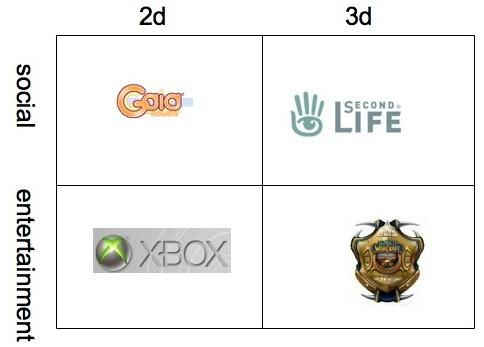
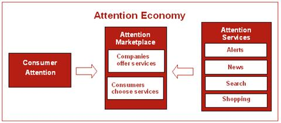
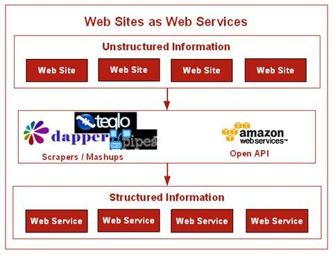
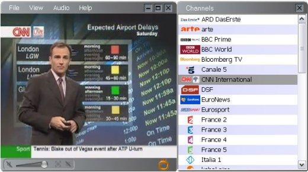

十大未来互联网趋势
那么未来的十年或更多我们能从互联网上期望些什么呢？就像 NatC commented 这个星期的民意测验所说，十年之内互联网最大的冲击是通过电脑屏幕访问互联网将不是必需“你的在线活动会和你的存在，旅行，你购买或扮演的对象混合在一起。”同样很多交叉会在下面提到的十大趋势（或更多）中发生，而且里面也会有我们现在不能预言的会变得非常流行的网络技术。在脑子里记住那些，这里是接下来十年里需要留神的十大未来互联网趋势……
1、语义互联网
现在，Tim Berners-Lee 的关于语义互联网的想象已经成为下一件大事很长时间了。的确它几乎接近神话，就像 Moby Dick。简单说来，语义互联网就是关于机器和机器通话。关于使互联网更加的‘智能’，或者像Berners-Lee他自己描述的：电脑“分析网络上的所有数据－内容，链接，然后在人和电脑之间相互影响。”在其他的时候，Berners-Lee 曾经这样描述这它“对数据像互联网那样设计的应用程序”－比如对信息的再利用设计。
像 Alex Iskold 在 The Road to the Semantic Web 中写的那样，语义互联网的核心思想是建立meta资料（后分析数据？）来描述数据，它会使电脑可以处理事物的含意。一旦电脑具备了语义功能，它们就有能力解决复杂的语义最优化问题。
那么语义互联网什么时候到来呢？积木已经在这里准备好了：RDF，OWL，microformats是他们中的一些。但是就像 Alex 在他的文中提到的，要花一段时间去注解这个世界的信息，然后以正确的方式去获取人个信息。一些公司，就像 Hakia and Powerset 和 Alex 的 AdaptiveBlue，正在努力去实现语义互联网。我们正在接近，但在语义互联网这个大承诺履行之前我们可能也完蛋了有些日子了。
2、人工智能
人工智能可能是计算机历史上的最终下一件大事，从1950以来它就是电脑科学家的梦想－－当 Alan Turing 引进图灵机去测试机器分辨人的能力。比如通过谈话。从网络的意义上说，人工智能意味着制造智能机器。从这个意义上说，它和语义互联网的想象有共通的东西。
我们只是开始在网络上想象人工智能的外表。 Amazon.com 已经开始尝试通过 Mechanical Turk ，他们的任务管理服务，向人们介绍人工智能的样子。它能使电脑程序协调使用人的智能去执行那些电脑不能做到的任务。从2005年11月2日它投放市场以来，Mechanical Turk已经逐渐的建立起一批追随者。有一个专门为“Turkers”建立的论坛叫Turker Nation，它看起来拥有轻到中等程度的赞助。无论如何，我们一月份报导的 Mturk 没有使用像十一到十二月5日那样的首写字母大写宣传。
虽然如此，人工智能在互联网上有一大堆的允诺。人工智能技术在像 Hakia and Powerset 这样的“搜索 2.0”公司投入使用。Numenta 是一家由技术传奇人物 Jeff Hawkins 创建的令人兴奋的新公司，它试图通过神经网络和细胞自动控制建立一个新的，类人脑的范例。这意味着 Numenta 试图让电脑去处理一些对人来说很简单的问题，比如识别面部或者在音乐中领会模式。但是因为电脑比人类快很多倍，当计算时，我们希望它突破新的界限－－可以解决我们以前不能达到的问题。
3、虚拟世界
第二人生以一个未来网络系统的身份引起了很多主流媒体的注意。但是最近在 Sean Ammirati 维护的超新星小组，讨论触及了很多其它的虚拟世界技术，下面的图总结得很好：
就拿韩国作为一个例子，随着‘年轻的一代’的长大，基础结构建造好了，在接下来的十年虚拟世界会变成一个活跃的市场波及全球。
它不仅只是关于数字生活，也使我们的真实生活更加数字化。就像 Alex Iskold 说明的，一方面我们有第二人生和其它虚拟世界的快速增长。在另一方面，我们开始用数字信息注释这个星球，通过像Google Earth这样的技术。
4、移动网络
移动网络是在 slow boil 上的另一个下一件大事。它在亚洲的一些地方和欧洲已经很壮大，而且随着今年苹果iPhone的发布它在美国市场也得到一股冲力。这只是一个开始。在十年之内会有很多通过移动设备实现的定位服务出现：比如路过本地购物商场时得到私人出价提议，或者当你驾车时取得地图导航，或者在一个星期五的晚上与你的朋友联结。寻找一家像Yahoo和Google这样大的网络公司作为移动关键词入口，会有移动操作员在旁边。
Nokia, Sony-Ericsson, Palm, Blackberry 和 Microsoft 这些公司已经在移动网络活跃多年，但是主要移动网络的一个发布已经可以使用。iPhone具有一个革命性的用户界面，它使用图像缩放，收聚和其它的方法，使用户浏览网络更加容易。同样，像 Alex Iskold 提到的那样，iPhone是一个可能扩大苹果公司影响力领域的策略，从网络浏览到社交网络甚至可能是搜索。
所以即使不管iPhone的宣传，至少在美国（也可能是它抵达的其它国家），十年之内iPhone都可能会被看为是移动网络设备的新突破。
5、注意力经济
注意力经济是一个消费者同意用他们的注意力交换服务的市场。示例包括个人新闻，个人搜索，快讯和推荐购买。注意力经济是说明消费者有选择权－－他们选择他们的注意力‘花’在哪里。另一个注意力游戏中的关键因素是关联。在消费者看到关联内容的时候，他／她可能会粘在那周围。这就创造了更多销售机会。
料想这个概念在接下来的十年在网络经济中会越来越重要。我们已经看到它受到mazon 和 Netflix的喜爱，但是新兴公司去探索还有更多的机会。

6、网站即服务
Alex Iskold 在三月写过：随着越来越多的网络可再混合，整个系统正在变成既是一个平台和又是一个数据库。主要的网站正在转化成为提供网络服务。这会更有效的向世界传播它们的信息。这种转化从来都不是平滑的－－举例来说，可行性是一个大问题，还有法律方面从来都不是简单的。但是，Alex 说过，这不是网站是否变成网络服务的问题，而是何时和如何的问题。
转化会以两种方式中的一种来发生。一些网站会跟随Amazon的方式，del.icio.us 和 Flickr 会通过REST API提供他们的信息。其它的则保持他们的信息专有，但是它会建立像Dapper, Teqlo 和 Yahoo! Pipes这样的应用服务，通过mashups开放。网络效应将会使非结构化信息让路给结构化信息－－为更智能的计算铺平道路。
注意到当前我们也能看到这个趋势和widgets特别是Facebook在2007年兴起。或许在接下来十年时间里网络服务的前景会更加开放，因为在2007年‘带墙的花园’问题一直跟着我们。

7、在线视频／网络电视
这是一个已经在网络上爆炸了的趋势－－但是你仍然有那种感觉：还会有更多东西出现。在2006年10月，Google获得了这个星球上最火爆的在线视频网站，YouTube，的所有权。同一个月的后几天，爆出了Kazaa和Skype的创始人正在建立一个网络电视服务，昵称The Venice Project（后来命名Joost）。在2007年，YouTube持续保持优势，同时网络电视服务也慢慢取得进展。
我们的网络博客 last100 在 8个网络电视应用的浏览 这篇文章中对现在网络电视的前景有一个很好的概述。Read/WriteWeb 的 Josh Catone 也 看了3个 －－Joost, Babelgum, Zattoo。
可以非常公平的说，在十年的时间内，网络电视会和今天有彻底的区别。更高质量的图像，更强大的流量，个性化，分享，还有更多－－他们都将在接下来的十年到来。或许现在最大的问题是：现在的主流电视网络（NBC，CNN等）如何适应这股潮流？

8、丰富互联网应用
在当前网络／桌面应用混合趋势持续的情况下，更期待看到RIA (rich internet apps)在使用和功能性增长的持续。Adobe的AIR平台（Adobe Integrated Runtime）是领导者中的一个，连同微软的Windows Presentation Foundation，混种的Laszlo和它的开源OpenLaszlo platform，还有很多其它的启动提供RIA平台服务。我们不要忘了Ajax通常也被认为是一个RIA。它能持续多久，或者它是否是一个‘2.0’还尚待分晓。
正如2006年4月（正好在他加入Adobe之前） Ryan Stewart 为 Read/WriteWeb所写的，“丰富互联网应用允许复杂的效果和转换，这对保持用户忙碌非常重要。这意味着开发商能以惊人的变化，在网上发放，并集中精力为用户开发完美的体验。这对正在建造新一代网络的任何人来说都是一个令人兴奋的时刻，接口终于赶上了内容。”
过去的几年证明 Ryan 是对的，由于Adobe和微软各自主推他们的RIA技术。还有更多的改革就要发生了，所以在十年时间内，我都等不急想看到什么地方能放下RIA的位置！
9、国际互联网
在2007年，美国仍旧是互联网的主要市场。但是十年之内，事情将会有很大的改变。中国一直被吹捧为一个增长的市场，但是其他有着巨大人口的国家也会同样增长－－比如印度和非洲一大票国家。
对大多数Web 2.0程序和网站（包括 R／WW），美国市场占50 ％以上的用户。当然，comScore 2006年11月报道3／4流量最高的网站是国际性的。comScore 说25个流量最高的美国网站中的14个在美国之外吸引的访问者比国内多。这其中包括了最有钱的5个美国财团：Yahoo! 网站, Time Warner Network, Microsoft, Google 网站, 和 eBay。
然而，现在仍然为时过早，在国际互联网上这点的收入仍然不大。在未来的十年时间里，收会从国际互联网里大量流出。
10、个性化
个性化在2007年是一个强大的主题，特别是对Google。Read/WriteWeb甚至做了一周个性Google的专题。但是你能看到这个趋势正在一群Web 2.0网站和公司中兴起，从last.fm 到 MyStrands 到 Yahoo homepage 还有更多。
下一个十年我们能期待什么呢？最近我们问了 Sep Kamvar，Google个性化的软件工程师带头人，未来是否会有一个‘个人PageRank’系统，他说：
“我们有很多个性化的标准。对那些为了网络历史而注册的用户，我们有最深的个性化，但是甚至对那些没有为网络历史注册的用户，我们根据你从哪个国家搜索标记你的结果。随着我们前进，个性化会继续保持一个倾斜度；你和Google分享得越多，你得到的结果就会越适合。”
如果没有别的事，跟踪Google在接下来的几年内如何使用个性化。还有他如何处理隐私问题，将非常吸引人。
文章原链接：https://blog.csdn.net/isuccess88/article/details/70339860